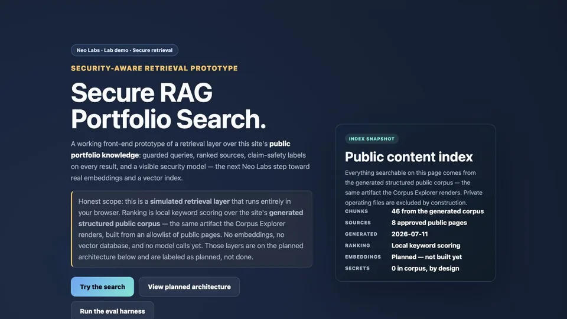

Prototype
Live route / browser-run retrieval
System 01
Secure RAG Explorer
Deterministic retrieval over a generated, allowlisted public corpus. The engine exposes stable chunk IDs and hashes, source-boundary metadata, claim-safety labels, refusals, and honest empty or offline states.
- Corpus
- 46 generated chunks
- Boundary
- 8 approved public pages
- Ranking
- Local keyword scoring
- Not claimed
- Embeddings or production RAG
